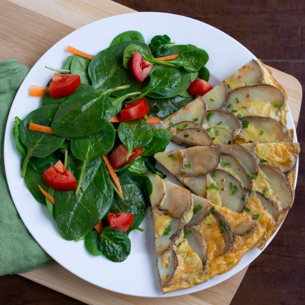

Spanish Potato & Onion Frittata with Spinach Salad

Prep Time
40 min
Nutrition (per serving)
576.7 kcalCalories
23.1 gProtein
51.9 gCarbs
31.6 gFat
Full nutrition table
| Calories | 576.7 kcal |
| Total fat | 31.6 g |
| Saturated fat | 6.8 g |
| Trans fat | 0.1 g |
| Cholesterol | 491 mg |
| Sodium | 280.1 mg |
| Carbohydrates | 51.9 g |
| Fiber | 8.9 g |
| Sugars | 12.8 g |
| Protein | 23.1 g |
| Potassium | 1612.6 mg |
| Calcium | 173 mg |
| Iron | 5.4 mg |
| Vitamin A | 1266.7 IU |
| Vitamin C | 48.4 mg |
| Vitamin D | 108.2 IU |
Cookware
Ingredients
- 1 (5 oz) pkgbaby spinach
- 2 mediumcarrots
- 1 small pkgchives
- 12eggs
- 2 clovesgarlic
- 2tomatoes
- 2 mediumyellow onions
- 4 mediumyellow potatoes
- balsamic vinegar
- black pepper
- Dijon mustard
- extra virgin olive oil
- honey
- oregano, dried
- salt
- thyme, dried
Steps
- Wash and dry the fresh produce. (Skip the spinach and chives if they came pre-washed.)4 medium yellow potatoes
1 small pkg chives
1 (5 oz) pkg baby spinach
2 medium carrots
2 tomatoes - Using a mandoline or knife, slice the potatoes into very thin slices and transfer to a colander. Sprinkle with salt and toss to coat; set aside in the sink or on a plate to drain.1 tsp salt
- Heat a non-stick skillet over medium high heat.
- Peel and thinly slice onion into half rings. Peel and mince (or press) the garlic.2 medium yellow onions
2 cloves garlic - Once the skillet is hot, add olive oil and swirl to coat the bottom. Add onion, garlic, thyme, and oregano to the pan, stirring until soft and golden brown, 4-5 minutes; remove from skillet and set aside.2 tsp extra virgin olive oil
½ tsp thyme
½ tsp oregano - Meanwhile, shake excess water from the potato slices and quickly pat dry with a paper towel.
- Add more oil and the potatoes to the pan; turn the heat down to low and cover with a lid. Cook potatoes, stirring occasionally, until tender, 5-7 minutes. Once cooked, spread onion in a layer on top of the potatoes.2 tsp extra virgin olive oil
- While the potatoes are cooking, crack the eggs into a medium bowl, add water and season with salt and pepper. Whisk to combine.12 eggs
¼ cup water
½ tsp salt
½ tsp black pepper - Pour the egg mixture into the skillet gently so you don't disturb the potatoes. Cover with a lid and cook until the base and sides are set, about 5-6 minutes.
- Preheat oven to broil and position rack under the broiler.
- While frittata is cooking on the stove, combine balsamic, oil, honey, Dijon, salt, and pepper in a large bowl to make the dressing for the salad.2 tbsp balsamic vinegar
¼ cup extra virgin olive oil
2 tsp honey
1 tsp Dijon mustard
½ tsp salt
½ tsp black pepper - Peel the carrots, then trim off the ends. Using a box grater, coarsely grate. Medium dice tomatoes and add both to the bowl with the dressing.
- Once frittata edges are set transfer the pan to the oven and broil until the center eggs are firm and the top becomes golden brown, 5-7 minutes.
- Add spinach to the bowl with the dressing and toss to combine.
- Chop chives into small pieces.
- When frittata is done cooking, remove from oven and place a cutting board on top of the skillet. Using oven mitts, flip the pan to turn the frittata out onto the cutting board so that potatoes are facing up.
- To serve, cut frittata into wedges and divide between plates. Garnish with chives and serve with spinach salad. Enjoy!